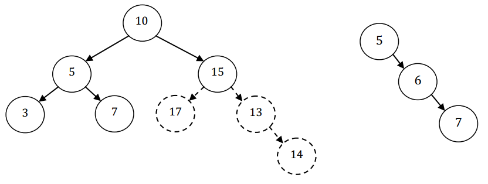

Cây nhị phân là một cấu trúc dữ liệu gồm các nút mà mỗi nút có tối đa 2 nút con (nút trái và nút phải). Cây nhị phân tìm kiếm là cây nhị phân thỏa mãn các điều kiện sau:
- Giá trị của các nút trong cây nhị phân tìm kiếm khác nhau từng đôi một, không có 2 nút có giá trị bằng nhau.
- Giá trị của các nút trong cây con bên trái đều nhỏ hơn giá trị nút gốc.
- Giá trị của các nút trong cây con bên phải đều lớn hơn giá trị nút gốc.
- Cây con bên trái và cây con bên phải cũng là cây nhị phân tìm kiếm
Cho một cây nhị phân, bạn hãy tìm một tập S các nút của cây sao cho các nút này liên thông với nhau và tạo thành một cây nhị phân tìm kiếm. Các mối quan hệ (con bên trái, con bên phải) của các nút trong S giữ nguyên như trong cây ban đầu. S có số lượng nút là lớn nhất.
Dữ liệu vào: gồm các dòng sau
- Dòng thứ nhất là số nguyên N biểu thị số lượng nút trong cây (1 ≤ N ≤ 105)
- Trong N dòng tiếp theo, dòng thứ i được biểu thị bởi ba số li , ri , vi tương ứng với một nút, trong đó li là chỉ số (vị trí dòng) của nút con bên trái, ri là chỉ số của nút con bên phải, vi là giá trị của nút. (1 ≤ vi ≤ 109). Nếu nút i không có nút con bên trái (hoặc phải) thì chỉ số li (hoặc ri ) bằng 0. Nút gốc có chỉ số là 1.
Dữ liệu xuất:
- Là một số nguyên xác định số lượng lớn nhất của tập S.
